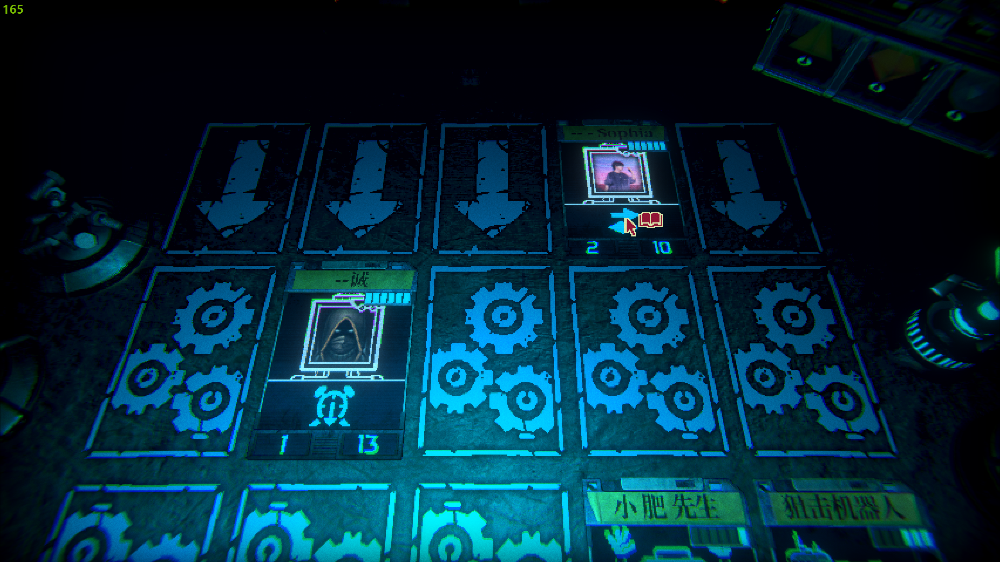
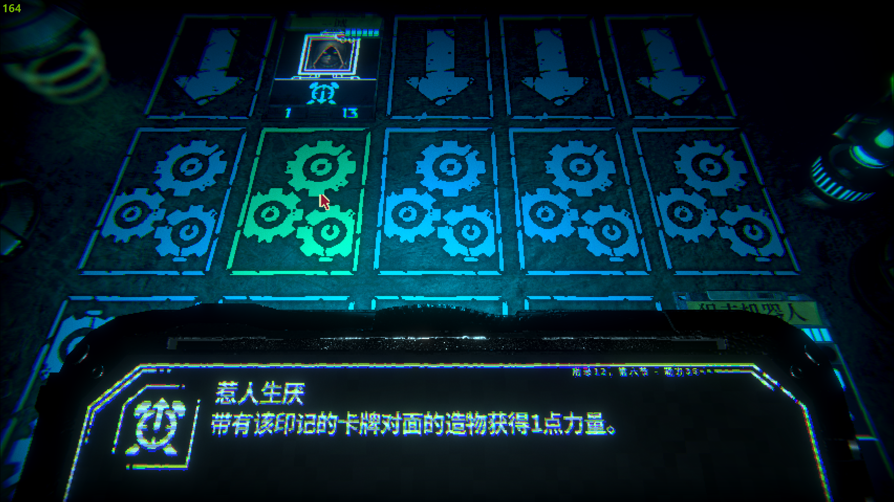

Portfolio
-
Project Name 1
I have also carefully considered this issue day and night. Now, solving project problems is very, very important. So, even so, the emergence of the project still represents a certain significance. How should project be implemented. We all know that as long as it is meaningful, it must be carefully considered. We have to face a very awkward fact, which is that, For me personally, a project is not just a significant event, it may also change my life. To clarify, what kind of existence is a project. We generally believe that once we grasp the key to the problem, everything else will be easily resolved. Generally speaking, we must carefully consider and consider.
-
Project Name 2

I have also carefully considered this issue day and night. Now, solving project problems is very, very important. So, even so, the emergence of the project still represents a certain significance. How should project be implemented. We all know that as long as it is meaningful, it must be carefully considered. We have to face a very awkward fact, which is that, For me personally, a project is not just a significant event, it may also change my life. To clarify, what kind of existence is a project. We generally believe that once we grasp the key to the problem, everything else will be easily resolved. Generally speaking, we must carefully consider and consider.
-
Project Name 3
I have also carefully considered this issue day and night. Now, solving project problems is very, very important. So, even so, the emergence of the project still represents a certain significance. How should project be implemented. We all know that as long as it is meaningful, it must be carefully considered. We have to face a very awkward fact, which is that, For me personally, a project is not just a significant event, it may also change my life. To clarify, what kind of existence is a project. We generally believe that once we grasp the key to the problem, everything else will be easily resolved. Generally speaking, we must carefully consider and consider.